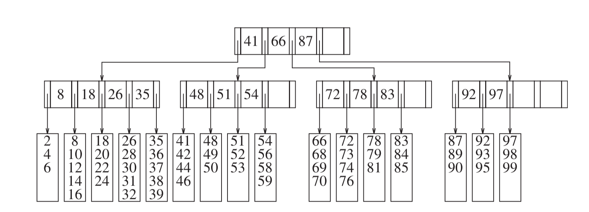
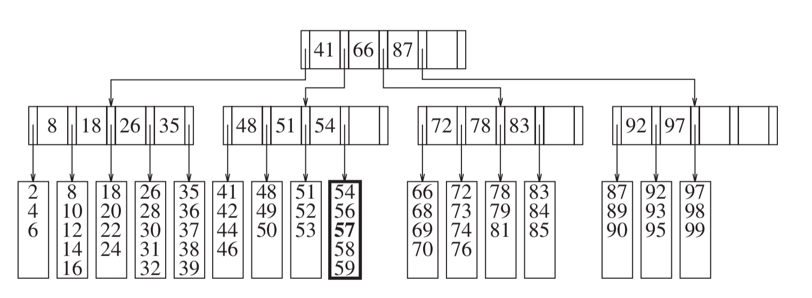
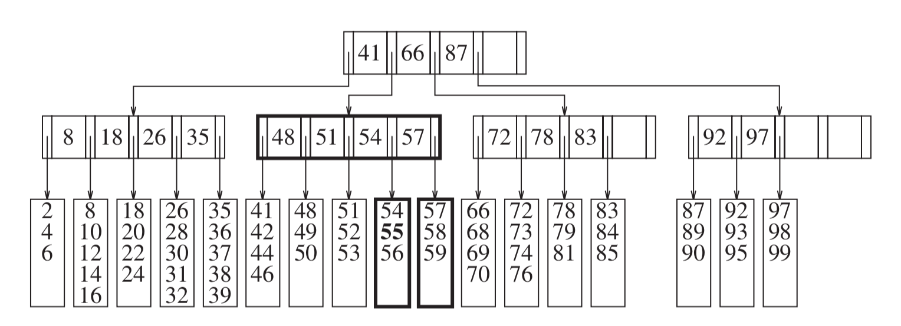
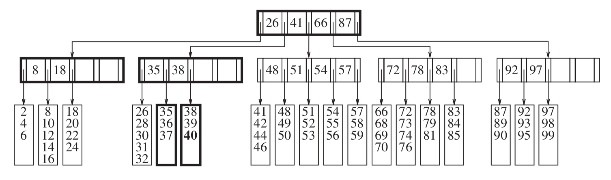
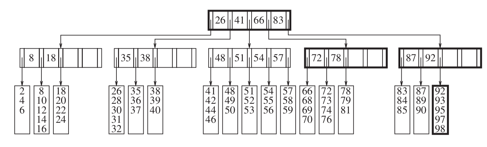

GVSU CIS 263
Week 8 / Day 1
Leftovers:
- Horner’s method vs. repeated Pow
- Vector<Term> vs whole polynomial.
Exam 1
Week 8 / Day 2
B-Trees
- We typically assume all operations take the same amount of time
- Only true when all ops are CPU ops.
- Things change when we must access data from a disk
- Fast disks spin at 7200 or 10000 rpm. (120 - 166 rps)
- On average must wait 3 to 4 ms for disk to spin halfway around
- In 3ms, modern machines can execute millions of instructions.
- Or, on a shared system, we can perform tens of millions of instructions, or make 10s of disk accesses.
- Bottom line: If entire tree doesn’t fit in memory, key to performance is to minimize disk accesses,
not “regular” CPU operations.
- Even SSDs are 1000x slower than a processor.
- Assume you have 10,000,000 records that don’t fit in memory. A typical binary search tree would have an expected
depth of 1.38 log N, or about 32 disk accesses.
- 32 disk accesses would take somewhere between 1 and 10 seconds depending on the number of concurrent users.
- B tree is a structure designed to minimize disk access
- Only put the “real” data at the leaves
- Build a tree where the number of children is determined by how many keys will fit in a disk block.
- This minimizes the depth of the tree and, therefore, the number of disk accesses needed to find the data.
- B+ tree: Common implementation of B-Tree
- Number of keys per node “M” is 5.
- Number of records per leaf “L” is also 5.
- M and L are generally not equal. Just a coincidence in this case.
- Nodes and leaves should remain at least half full.
- B tree starting point 
- Add 57: 
- Add 55: (Basic node split) 
- Add 40: (Cascading split) 
- Remove 99: (Remove and combine ) 
- Short-cuts:
- Can “borrow” from neighbors if possible (when both inserting and deleting)
- Consider effect on your 10,000,000 record dataset.
- Assume disk blocks are 8,192 bytes
- Data key (e.g,. driver name) is 32 bytes
- Pointer to another branch is 4 bytes.
- Solve for M:
32(M -1) + 4M ≤ 8192 M ≤ 228(i.e., you can fit 228 keys + block numbers into a disk block)L = 32(256 * 32 = 8192)- Need at least
10,000,000 / 16 = 625,000leaves log_228 625,000 = 2.45. Thus, we need 3 levels of pointers, plus the leaves.- Any record can be obtained in 4 disk accesses. (Speedup of about 8).
External Sorting
- If you have to sort more data than will fit in memory, traditional sorts become inefficient.
- Suppose your data is on a linear tape.
- How many trips across the tape needed for a bubble sort?
- How many trips across the tape needed for a selection sort?
- How many trips across the tape needed for a merge sort?
- What would you do differently if you had multiple tapes? (Perhaps 4?)
- Starting point: If M records fit in memory, load M records and sort them.
- Take sorted chunks of M records and alternate on two of the output tapes.
- Merging is now less expensive because the two tapes can move forward only.
- How many trips across the tape?
Log N/M - Can we do better with more tapes?
- Apply the same technique.
- Read groups of M, then disperse them over
ktapes. - Merge the
ktapes into chunks of lengthk*M - How many runs?
log_k N/M - How do we merge
kgroups together?- Use a priority queue.
- Put the first elements in the queue.
- Pull off the minimum
- Advance the tape that “owned” the minimum and add that value to the queue
- Read groups of M, then disperse them over
- Apply the same technique.
- How many tapes does this take?
2k - Perhaps these many tapes can be analogous to disk tracks and/or cylinders.
- How close can we get with
k+1tapes? - Polyphase Merge
- Suppose we have 3 tapes
- Putting half on each output tape doesn’t help, because after the first merge, we need to move part of the first tape somewhere else.
- An uneven split will help
- Suppose there are 37 groups to be sorted. Put 21 on 1 and 13 on the other.